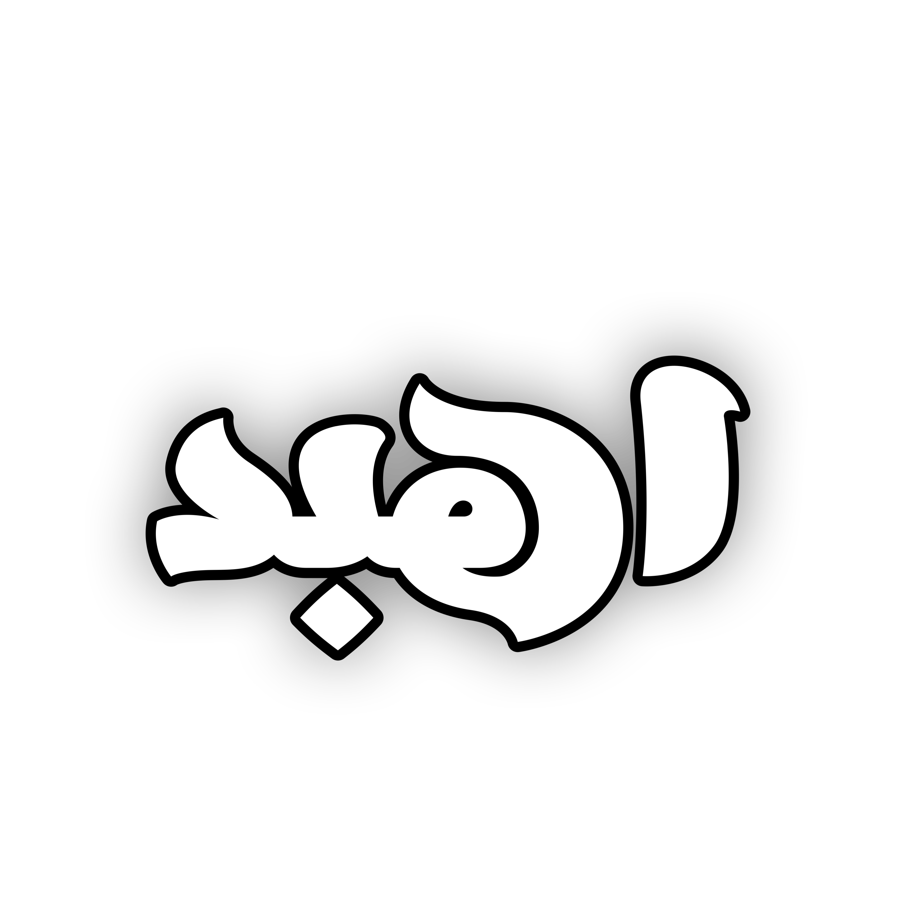

لعبة اهبد اجابتك وجمع نقاط !
-
🎯
يطلع لك سؤال وقدامك 12 اجابة, اكتب أي إجابة صح تطري على بالك .
-
⭐
الهبده الذهبية: كل جولة فيها اجابتين ذهبيتين، اللي يحجزها ياخذ نقطتين (x2) بدل نقطة وحدة.
-
🏆
نظام اللعبه: 5 جولات كل جوله سؤال و 12 أجابة , اعلى هبيد يجمع نقاط هو الفائز .
مساحة إعلانية - البداية (320×50)
اللاعبون المتصلون:
1 / 5 (الحد الأدنى 2)
مساحة إعلانية - الانتظار (320×50)
الجولة 1 / 5
غرفة: ----
عدد الاجابات المتبقيه: 12